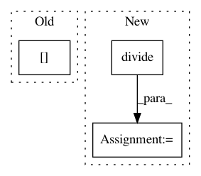

09fb8c1e8fa60fd1a8cd341cc502d8ecdd2d1dd6,sksurv/nonparametric.py,,kaplan_meier_estimator,#Any#Any#Any#Any#Any#,174
Before Change
uniq_times, n_events, n_at_risk = _compute_counts_truncated(event, time_enter, time_exit)
values = 1 - n_events / n_at_risk
values[n_events == 0] = 1.0 // in case of 0/0 = nan
if time_min is not None:
mask = uniq_times >= time_min
After Change
uniq_times, n_events, n_at_risk = _compute_counts_truncated(event, time_enter, time_exit)
// account for 0/0 = nan
ratio = numpy.divide(n_events, n_at_risk,
out=numpy.zeros(uniq_times.shape[0], dtype=float),
where=n_events != 0)
values = 1.0 - ratio
if time_min is not None:
mask = uniq_times >= time_min
In pattern: SUPERPATTERN
Frequency: 4
Non-data size: 3
Instances
Project Name: sebp/scikit-survival
Commit Name: 09fb8c1e8fa60fd1a8cd341cc502d8ecdd2d1dd6
Time: 2020-07-02
Author: sebp@k-d-w.org
File Name: sksurv/nonparametric.py
Class Name:
Method Name: kaplan_meier_estimator
Project Name: fgnt/pb_bss
Commit Name: 036267bd86f546e7ea5d994501b2e5761c294c61
Time: 2017-12-04
Author: heitkaemper@nt.upb.de
File Name: nt/speech_enhancement/beamformer.py
Class Name:
Method Name: blind_analytic_normalization
Project Name: mittagessen/kraken
Commit Name: 521839eb8f9d81c55d9cdc851df8af65278c4f45
Time: 2019-10-15
Author: mittagessen@l.unchti.me
File Name: kraken/blla.py
Class Name:
Method Name: segment
Project Name: ellisdg/3DUnetCNN
Commit Name: e4c6f8fd1d3ac456442b94d8d70e55272be90156
Time: 2018-03-16
Author: david.ellis@unmc.edu
File Name: unet3d/utils/utils.py
Class Name:
Method Name: resize